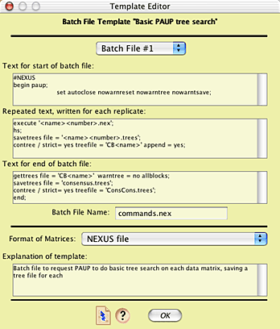
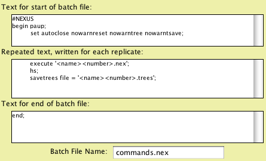

|
|
Batch Architect: Design of Batch Templates |
Return to Batch Architect Page
The Template Editor for editing Batch File templates appears as follows:

The text entered into the "Text for start of batch file" field will be written once, at the start of the file; the text in "Repeated text, written for each replicate" will be written as many times as there are replicates; the text in "Text for end of batch file" will be written at the end of the file. The following codes included in these fields will be replaced in the batch file as follows:
For the field "Repeated text, written for each replicate", the following replacement will also be made:
For example, consider 5 replicates run with a base name of "matrix" for a template with the following specification:

A file called "commands.nex" would be created by Mesquite that would look like this:
#NEXUS
begin paup;
set autoclose nowarnreset nowarntree nowarntsave;
execute 'matrix1.nex';
hs;
savetrees file = 'maxtrix1.nex';
execute 'matrix2.nex';
hs;
savetrees file = 'matrix2.nex';
execute 'matrix3.nex';
hs;
savetrees file = 'matrix3.nex';
execute 'matrix4.nex';
hs;
savetrees file = 'matrix4.nex';
execute 'matrix5.nex';
hs;
savetrees file = 'matrix5.nex';
end;
Up to five separate batch files can be specified for any one Batch File Template.
The "Format of Matrices" choice will be ignored if matrices are not being exported (e.g., if Export Batch Files was chosen).
© David Maddison & Wayne Maddison, 2003